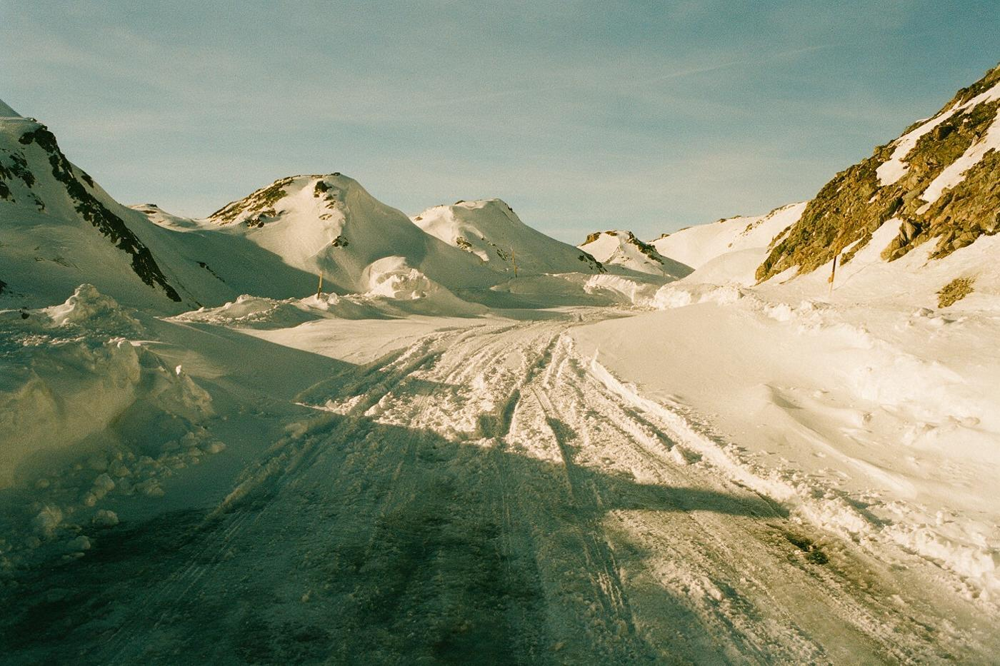

路径的非标性
这条线在任何 OTA 上都买不到。它绕开 318 常规线，走理小路、格聂南线、 219、317 阿里北线，并主动放弃羌塘无人区——这个取舍本身就是专业判断， 也是"攻略"与"实测"的分界线。
本案例整理自一份公开的自驾记录视频内容： 两位同行者、一辆车，从成都出发走川西—西藏—阿里—可可西里的大环线， 全程将近 15,000 公里，基本不住酒店、睡在车里。 它不是我们的项目，但它是我们方法论的起点。



这条线不走传统 318 进藏，而是先看川西秋色，再经格聂南线进入西藏腹地， 最后从阿里北线与青藏线回成都。路线里有三次明确的"取舍"：
还有大量"可能去"的措辞：冷嘎措、子梅垭口、墨脱、吉隆—— 说明这不是一次性攻略，而是基于多次实地经验动态生成的路线。
成都 → 理县 → 理小路 → 小金 → 雅拉雪山 → 梦石公园 → 鱼子溪 → 新都桥 → 理塘 → 稻城亚丁 → 格聂南线 → 巴塘 → 然乌湖 → 波密 → 边坝 → 纳曲 → 拉萨 → 阿里（洋湖、卡罗冰川）→ 日喀则 → 珠峰大本营 → 219 国道 → 佩姑措 → 马旁雍措 → 拉昂措 → 冈仁波齐 → 扎达 → 思泉河 → 317 阿里北线 → 改则 → 射林措 → 纳木措 → 唐古拉山 → 可可西里 → 玉树 → 扎陵湖、鄂陵湖、星星湖 → 成都
"能把这些东西装完不难，很多车都能做到，但是要想装完过后还能保持一张 1 米 9 的大床不变，我觉得没几辆车能行。"
"西藏的风景绝对是独一无二，但是那里吃的绝对是属于美食荒漠……所以说这次我们决定自己做饭。"
"可乐是真的很能有效地缓解高反，但是你得买这种有糖的可口可乐，不能买百事。"
"这是一个米家的充放电枪……甚至你的车万一趴窝没电了，它还能接 220 伏的电源给你车应急。"
"很多博主长途驾驶他们会断更，因为又要开车，又要做攻略，又要剪视频……不过呢柴弟做事情绝对是有始有终的。"
不是表层的装备清单，而是三个可以工程化的方法。
这条线在任何 OTA 上都买不到。它绕开 318 常规线，走理小路、格聂南线、 219、317 阿里北线，并主动放弃羌塘无人区——这个取舍本身就是专业判断， 也是"攻略"与"实测"的分界线。
"不住酒店、睡车里"表面是省钱，实质是把住宿成本转移成物资、时间与风险成本。 记录给出了完整解法：大床找平、隐私窗帘、洗澡帐篷 + 双折叠水桶 + 花洒 + 热得快、 制氧剂、高原干燥应对、紫外线防护。这是一个能在车上独立运行 15,000 km 的生活系统。
后备箱盖板拆除、座椅放倒不压物、"一指距离"的间隙控制、 鞋垫与暖宝宝做找平、门缝放眼罩、中岛改储物盒、座椅抽屉放药品—— 这是"容量规划"而非"买一堆东西"，可复制、可培训、可标准化。
这是原记录的内容，也是我们"物资与装备方案"产品的原始输入。
原记录的装车演示里，有几个细节是真正有工程价值的：
我们的产品化：把它变成《空间布局图》—— 俯视图 + 侧视图，标注 8 类收纳位，配装载三问校验， 并在出发前按图实装复核。装不下的问题在出发前解决，不在路上解决。
记录里提到防滑链、拖车绳、补胎工具、充气泵，也说了"希望我永远用不上"。 这是态度，不是方案。真正的空白在下面这三处：
没有任何系统化的补给点、救援点、医疗点与备用车方案。 我们补的是《补给地图 + 救援白名单 + 医疗点清单 + 备用车承诺》四件套。
珠峰大本营、阿里无人区、可可西里涉及边境证、无人区通行、景区预约与生态红线。 我们补的是许可证清单、通行证代办与生态守则签署。
个人 IP 随意性强、无法复制、无法承接付费客户。 我们补的是把"一个人的经验"变成领队可执行的 SOP + 可售卖的物资包 + 可预订的线路。
案例明确留下（或隐含留下）的未验证项。这正是"专业方案公司"与"博主攻略"的分界线， 也是我们的护城河——每一项都需要真实资金、真实时间、真实高原条件去验证，抄不走。
| # | 未验证风险 | 实测方法 | 结论沉淀 |
|---|---|---|---|
| 01 | 高原能否煮熟饭 | 同一锅具在 2,000 / 3,500 / 4,500 m 三档海拔煮米，记录耗时与结果 | 《高原炊具适配表》，标注每款电器最大可用海拔 |
| 02 | 电饭煲 / 电热锅实际耗电 | 满电续航实测（车载 + 户外电源） | 《炊具耗电与补能表》 |
| 03 | 纯电车高原与无人区续航衰减 | 满电至实际到达里程，含爬坡、空调、载重、备胎因素 | 《电车自驾续航衰减系数表》（按海拔 / 温度 / 载重 / 速度） |
| 04 | 睡眠时的通风与一氧化碳 | 密闭环境长时间怠速 + 睡眠状态的 CO₂ / CO 实测 | 《睡车通风标准 SOP》 |
| 05 | 无信号路段的实际盲区分布 | 三大运营商轨迹实测 | 《无信号路段图》+ 卫星通信建议 |
| 06 | 洗车与排污的合法点 | 沿途可合法用水点与污水倾倒点排查 | 《高原用水与排污合规点清单》 |
| 07 | 备胎更换的实际耗时（新手） | 3 人团队标准化换胎计时（高原低温条件） | 《换胎作业标准与耗时》 |
| 08 | 防滑链装用的实际耗时与可行性 | 轿车 / SUV / MPV 在低温条件实测 | 《防滑链适配与操作规范》 |
这些结论会进入路线策划服务的交付物：客户购买路线策划时，附赠对应的实测表。
| 原记录中的内容 | 直接产品化 | 我们的增值（案例没有的） |
|---|---|---|
| 路线规划（成都—西藏 15,000 km 大环线） | 路线策划服务 | 加油 / 维修 / 医院 / 备选路线白名单化；合规通行证；季节与封路预案 |
| 物资清单（食品 / 炊具 / 洗漱 / 睡眠 / 衣物） | 物资与装备方案 | 按车型与天数参数化生成；空间布局图；找平校验；高原与无人区适配 |
| 车辆收纳与空间管理 | 《空间布局图》 | 装载体积–重量–重心校验；上下车取物动线；不压物间隙标准 |
| 睡车方案（1.9 m 大床、隐私帘、找平） | 睡车方案 | 车型适配矩阵；通风与空调策略；营地过夜替代方案 |
| 自炊系统（空气炸锅、电饭煲、电热锅） | 自炊方案 | 高原烹饪可行性实测数据；无人区燃料限制；取水点与净化 |
| 高原健康包（制氧剂、加湿器、葡萄糖） | 物资方案 + 后勤保障 | 高反分级处置流程；制氧站分布；医院与制氧资源清单 |
| 车辆应急（防滑链、拖车绳、补胎条、充气泵） | 物资方案 + 后勤保障 | 备件前置、维修点白名单、救援 SLA、备用车 |
| "免费的不去白不去"（稻城亚丁 31 号前免票） | 路线策划 | 季节窗口日历；门票政策跟踪；淡旺季价格策略 |
| 不走羌塘无人区（因上次经验） | 路线取舍 | 无人区通行政策与生态红线核查；替代段设计 |
| 承诺不断更（内容生产节奏） | 内容共创 | 日更交付机制；素材授权与分成；品牌联合出品 |
| 出发前必吃楼下火锅（仪式感） | 企业与品牌线 | 出发仪式 + 结营仪式 + 品牌记忆点设计 |